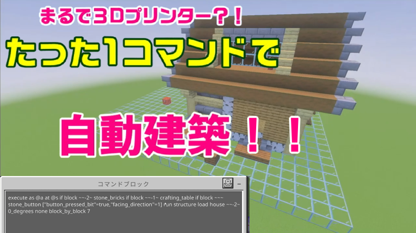

まるで3Dプリンター？！たった1コマンドで自動建築の家！！

こんにちは！今回は、まるで3Dプリンターみたいに家が自動で建つ、 ちょっとすごい1コマンドを紹介します！
ボタンを押すだけで、保存しておいた家のストラクチャーがその場に出現します。 配布ワールドやコマンド紹介ワールドでも映えるので、インパクト重視の演出にもぴったりです！
まず大事なのが、「house」 という名前で家のストラクチャーを事前に保存しておくことです。 このコマンドは、保存済みのストラクチャーを読み込んで建築する仕組みになっています。
つまり、先に好きな家を作ってから、ストラクチャーブロックなどを使って house という名前で保存しておいてください！
動画はこちら！
実際の動きは、こちらのYouTube動画でも見られます！
使うコマンド
こちらが自動建築用のコマンドです！
execute as @a at @s if block ~~-2~ stone_bricks if block ~~-1~ crafting_table if block ~~~ stone_button ["button_pressed_bit"=true,"facing_direction"=1] run structure load house ~~-2~ 0_degrees none block_by_block 7このコマンドは、特定の位置に置かれたブロックとボタンの状態を判定して、 条件がそろったときに house を読み込みます。
下から石レンガ、その上に作業台、さらにボタン という形でセットして、 ボタンを押すと家が建つイメージです。
ポイント
structure load を使っているので、自分で作った建物をそのまま呼び出せるのが魅力です。 いろいろな家を保存しておけば、別バージョンの自動建築装置も作れます！
また、block_by_block 7 になっているので、一気に出るというより 少しずつ建っていく感じがあって、見た目も楽しいです。
念のため壊す用のコマンドも貼っておきます！
建てたあとに元に戻したい時のために、削除用のコマンドもあります。
execute as @a at @s if block ~~-2~ smooth_stone if block ~~-1~ furnace if block ~~~ stone_button ["button_pressed_bit"=true,"facing_direction"=1] run fill ~~-2~ ~14~8~13 air destroyこちらは範囲内を air にして壊すコマンドです。 実際に使う時は、消したい建物の大きさに合わせて範囲を調整してください！
自動建築と削除の両方を用意しておくと、動画撮影やワールド紹介でもかなり便利です。 気になった方はぜひ試してみてください！